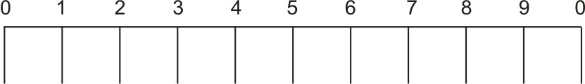
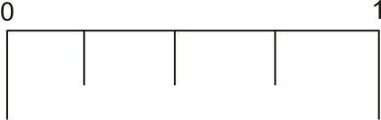
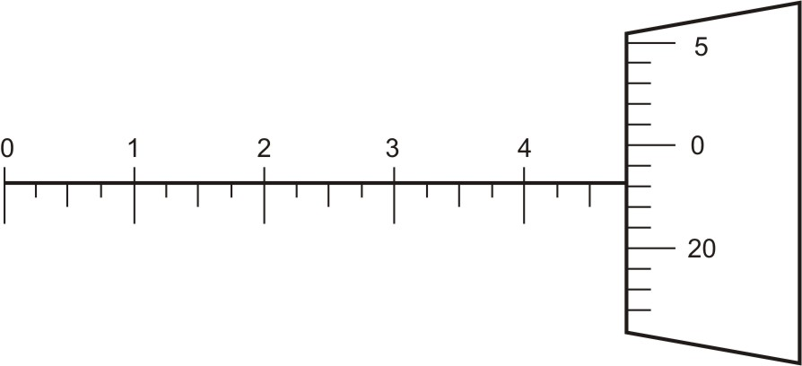
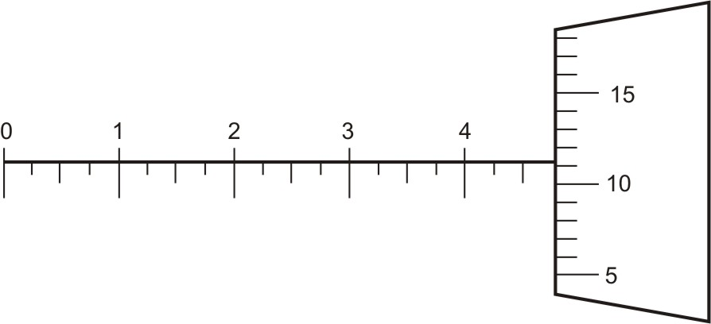

MEASUREMENT, MEASURING TOOLS & LAYOUT TOOLS Download PDF
Using/Reading an Inch System Micrometer
The scale on the sleeve on an inch system micrometer has ten major divisions representing 0.1 inch.

Figure 1: Each mark or graduation equal to 0.1 inchFurther subdivided into four equal parts, each representing 0.025 inch thus there is a mark on the micrometer sleeve for every 0.025-inch increment.

Figure 2: Each 0.1-inch mark or graduation is equally divided into four partsThe circumferential scale on the thimble over the sleeve is divided into 25 parts, each representing 0.001 inch.
Figure 3: Each mark or graduation on circumferential scale is equal to 0.001-inch
One revolution of the spindle produces a movement of one-fortieth of an inch i.e. 0.025inch.
To read an inch micrometer, follow these steps:
(An example of how to read the micrometer is shown)
In the example the micrometer reads from zero to one inch.
 Figure 4: Taking an inch micrometer reading
Figure 4: Taking an inch micrometer reading
- Look at the scale on the sleeve. The last number that can be visible in the above figure is 5, so that is equal to half of an inch i.e. 0.5.
- Now look at the subdivisions of twenty-five thousandth of an inch (0.025), possibilities of subdivisions are 0 or 0.025 or 0.050 or 0.075. Do not read between the lines on the sleeve. Read only the last division on the sleeve left exposed by the thimble. Two marks can be seen in the above figure, add 0.025 inch for each additional mark.
- Note the mark on the circumferential scale on thimble that line up with the index line. Each graduation on this scale is equal to 0.001 inch so this value is to be added to the final measurement. It is 23 in the above figure. That equals twenty-three thousandths of an inch (0.023).
- Now add the readings obtained in step 1-3 together. The reading is 0.500 + 0.050 + 0.023 = 0.573 inch.
- Repeat each step to recheck the feel of the measurement and the accuracy of the reading.
Some more examples:
Example-1
Main linear scale reading + [Thimble reading x Least count]
Where,
Least Count = (number of complete turns of thimble required to move the thimble one division on main linear scale X number of divisions on circumferential scale) / smallest division on main linear scale
Least Count = (number of complete turns of thimble required to move the thimble one division on main linear scale X number of divisions on circumferential scale) / smallest division on main linear scale

Figure 5: Inch micrometer reading
Last number that can be visible at the scale on sleeve = 4 = 4 X 0.1 = 0.4 inch.
Number of subdivisions that can be seen = 2 = 2 X 0.025inch = 0.050inch
Thimble reading, graduation which aligns with the index line on the sleeve = 23 = 23 X least count = 23 X 0.001 = 0.023inch
Total Inch micrometer reading = 0.473inch.
Number of subdivisions that can be seen = 2 = 2 X 0.025inch = 0.050inch
Thimble reading, graduation which aligns with the index line on the sleeve = 23 = 23 X least count = 23 X 0.001 = 0.023inch
Total Inch micrometer reading = 0.473inch.
Example-2

Figure 6: Inch micrometer reading
Last number that can be visible at the scale on sleeve = 4 = 4 X 0.1 = 0.4inch.
Number of subdivisions that can be seen = 2 = 2 X 0.025inch = 0.050inch.
Thimble reading, graduation which aligns with the index line on the sleeve = 11 = 11 X least count = 11 X 0.001 = 0.011 inch.
Total Inch micrometer reading = 0.461inch.
Number of subdivisions that can be seen = 2 = 2 X 0.025inch = 0.050inch.
Thimble reading, graduation which aligns with the index line on the sleeve = 11 = 11 X least count = 11 X 0.001 = 0.011 inch.
Total Inch micrometer reading = 0.461inch.
| ← Tutorial 5 | Tutorial 7 → |